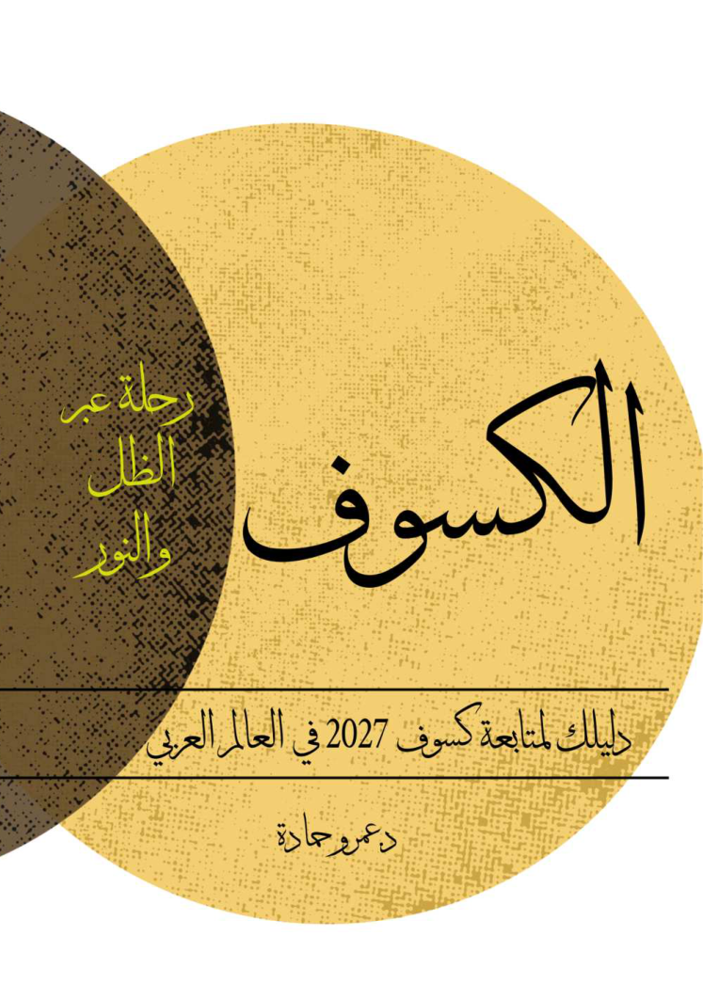

احمِ عينيك طوال المرحلة الجزئية
يمكن نزع النظارات فقط خلال الكلية التامة وأنت داخل مسارها، مع إعادتها فور ظهور أي جزء مضيء من الشمس.
من صفحات «الكسوف» إلى مشهد السماء.
شاهد الظواهر وهي تحدث، وتتبع رحلة ظل القمر عبر أرض العرب.

الرفيق الرقمي للكتاب THE ECLIPSE COMPANIONانقر أي نقطة على الأرض لتعرف ما سيُرى هناك، ثم حرّك الزمن لتشاهد عبور القمر أمام الشمس.
مقطع هندسي محسوب للقرصين، وليس صورة فوتوغرافية. لا يصوّر الهالة أو التضاريس على حافة القمر. المشهد عند ذروة الرؤية افتراضيًا.
بيانات المسار والعناصر البسلية: Fred Espenak, NASA’s GSFC. الحساب عند مستوى سطح البحر وبحافة قمر ملساء؛ لا يشمل تضاريس الأفق أو حافة القمر أو الطقس. قيم ΔT المعتمدة هي ٧١٫٧ ثانية لكسوف ٢٠٢٧ و٧٩٫٥ ثانية لكسوف ٢٠٣٤، كما في جداول NASA المستخدمة؛ هذه تنبؤات وليست قياسات نهائية.
النطاق الجزئي يمثل المواقع التي يمكن أن ترى تداخل القرصين خلال الحدث، مع حد تقريبي لشروق/غروب الشمس عند ارتفاع مركزها −٠٫٨٣٣°. التظليل مستوفى من شبكة ٠٫٥°، وقد يختلف قرب حد الرؤية بمقدار خلية؛ حساب النقطة مستقل عن الشبكة. نسبة الحجب هي مساحة القرص المغطاة بالقمر ولا تستبعد الجزء الواقع تحت الأفق. جميع الأوقات UTC.
اتجاه الرسم الافتراضي: الشمال السماوي أعلى والشرق يسار. يمكن تدويره إلى سمت الرأس؛ الاتجاه قرب السمت نفسه حساس للموقع. حدود الدول من Natural Earth بدقة عامة وليست خريطة شوارع. الأسماء المعروضة مخصصة لهذا الموقع.
عناصر ٢٠٢٧ · NASA ↗ · عناصر ٢٠٣٤ · NASA ↗ · خرائط Xavier Jubier ↗تسجيلات مرتبطة بالكتاب، ومحاكاة تعليمية تشرح ما تراه.
أرقام الصفحات تشير إلى النسخة المرفقة. مواد Rice University وNASA مواد مكملة؛ لا يُنسب إنتاجها إلى مؤلف الكتاب. لكل مقطع رابط إلى مصدره واعتماداته.
حرّك القمر أمام الشمس لتتعرف إلى الانتقال من الكسوف الجزئي إلى الكلي.
رسم تعليمي مبسّط، لا يحاكي التوقيت أو الاتجاه الفعلي لكسوف ٢٠٢٧ في أي مدينة.
كسوف جزئياستخدم نظارات كسوف سليمة ومطابقة لمعيار ISO 12312-2 أثناء المراحل الجزئية. النظارات الشمسية العادية لا تحمي عينيك.
اقرأ إرشادات NASA للرصد الآمن ↗يمكن نزع النظارات فقط خلال الكلية التامة وأنت داخل مسارها، مع إعادتها فور ظهور أي جزء مضيء من الشمس.
ضع مرشحًا شمسيًا مخصصًا أمام العدسة. لا تنظر عبر منظار أو تلسكوب غير مرشّح حتى مع ارتداء نظارات الكسوف.
راقب صورة الشمس المسقطة عبر ثقب صغير على سطح خلفك. لا تنظر إلى الشمس من خلال الثقب.
رفيق تعليمي لكتاب «الكسوف» للدكتور عمرو حمادة، يجمع مصادر مرئية وخرائط لاستكشاف الظاهرة. النصوص التعريفية مختصرة، وحقوق الفيديوهات والبيانات لأصحابها الموضحين عند كل مادة.